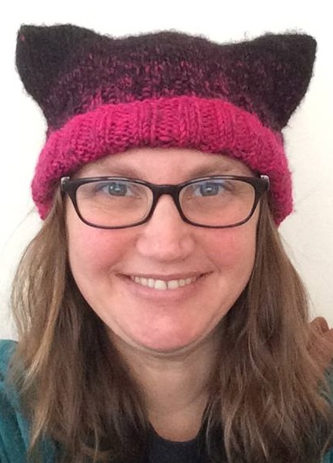

I was born in Dallas, Texas, raised on Grand Island, New York, and then went to college at Atlantic Union College (in Massachusetts), earning a BS in Mathematics with minors in Computer Science and Computer Information Systems. I have an MS in Mathematics from UMass Lowell and a PHD in Applied Mathematics from Rensselaer Polytechnic Institute (RPI, near Albany, NY). I've taught at UMass Lowell, RPI, Hudson Valley Community College, The College of Saint Rose, Mansfield University, The Univeristy of Pennsylvania, and am currently teaching at American University.
My first job was lifeguarding, and I've also taught swimming. I play the violin. I am married to Michael Robinson and we have three sons.
My Real Webpage